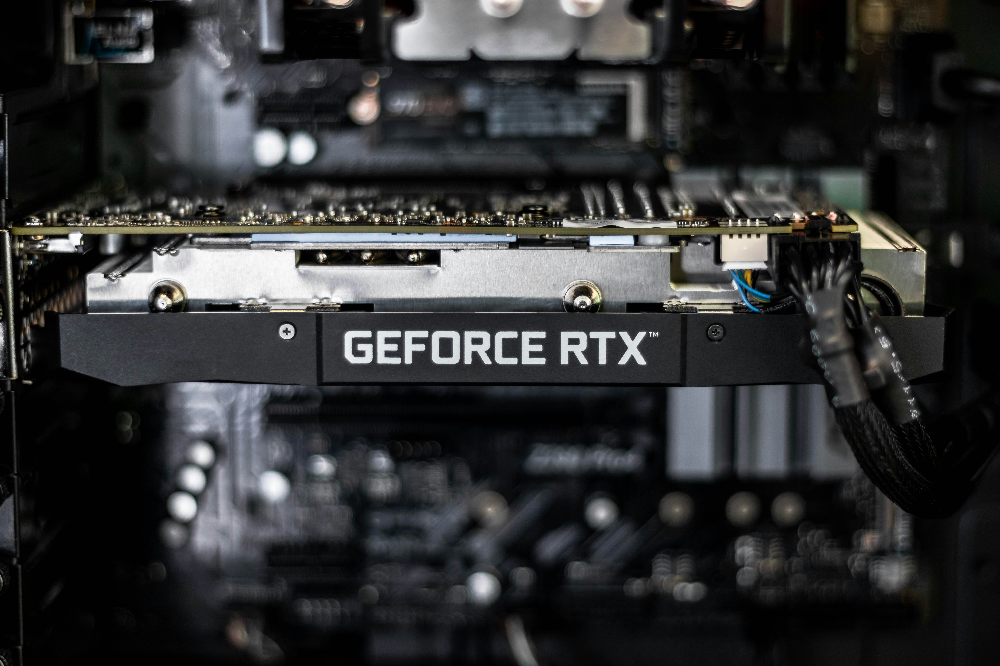

En esta página se resume la información que circula sobre las próximas tarjetas gráficas de NVIDIA en su próxima serie 60. Aún no han sido anunciadas oficialmente, así que todo lo que se verá aquí son rumores.

Foto de Christian Wiediger de Unsplash
¿Qué se rumorea?
- Arquitectura: Se implementará una nueva arquitectura llamada "Rubin", sucesora de Blackwell (RTX 50).
- Lanzamiento: Su lanzamiento puede ser en la primera mitad de 2027 según los rumores más recientes, aunque hay fuentes que hablan de 2028.
- Rendimiento: Las filtraciones actuales hablan de mejoras en rendimiento y trazado de rayos.
- Memoria: Se menciona memoria GDDR7 en los modelos más altos (RTX 6080 y 6090).
¿Por qué es importante?
Cada nueva generación de tarjetas gráficas cambia lo que es posible en videojuegos, diseño 3D e inteligencia artificial. Por eso el mundo tecnológico sigue de cerca cada filtración.